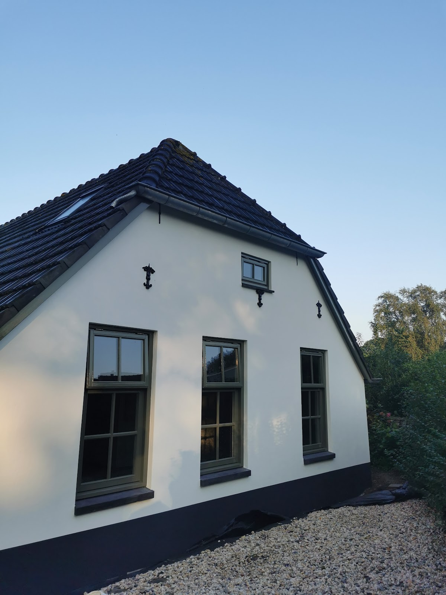
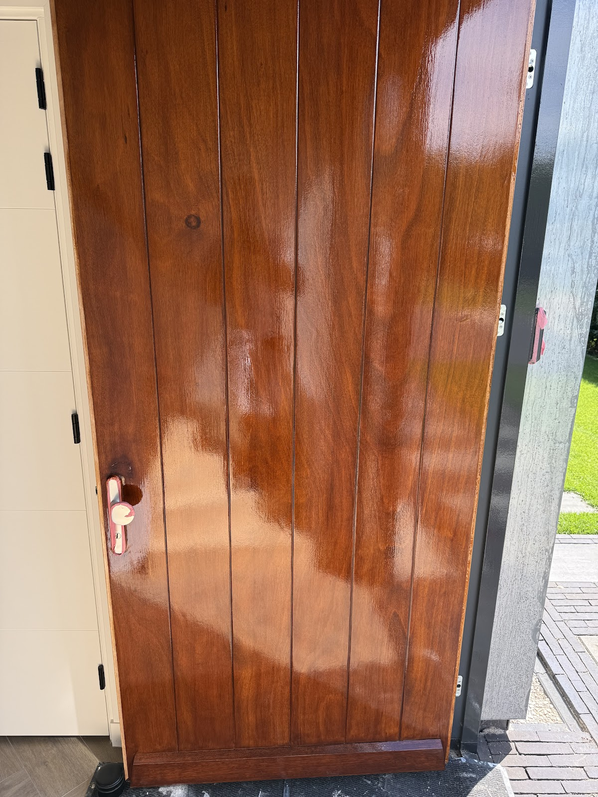
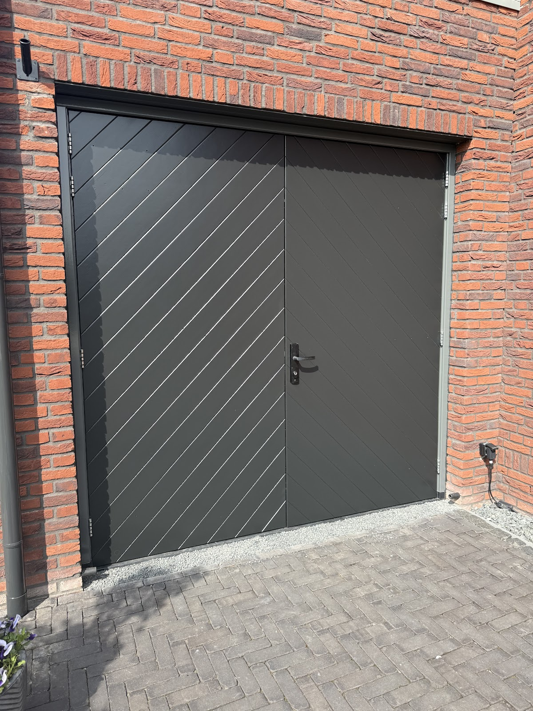
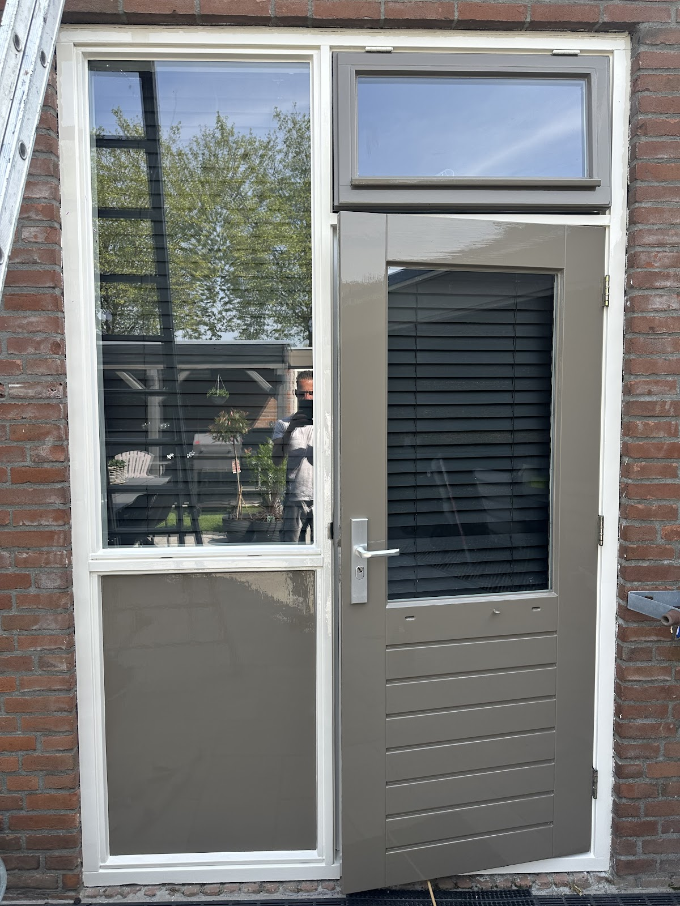
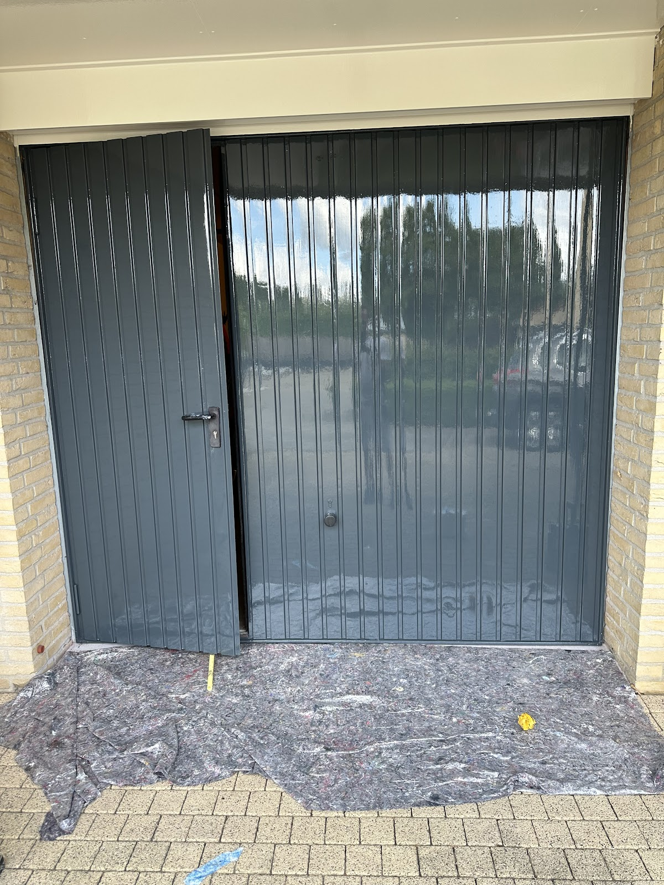
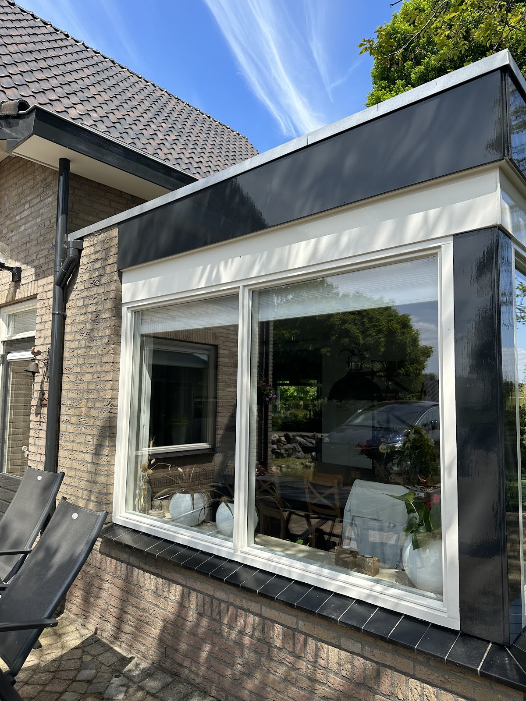
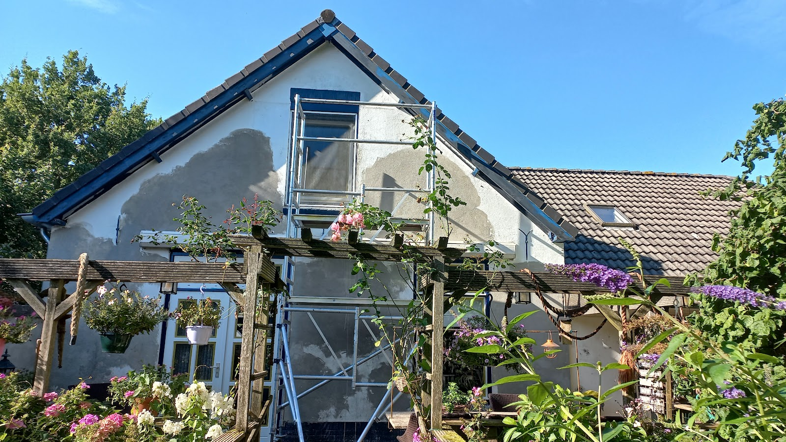

Schilder in Zutphen en omgeving
Strak in de lak.Binnen en buiten.
Ik ben Dennis Louter. Ik schilder woningen en bedrijfspanden, herstel houtrot en stucwerk, en werk nauwkeurig met de beste materialen.
4,9uit 16 Google-reviews

Werk dat je ziet glimmen
Foto's van opgeleverde klussen. Bij elke foto de kleur zoals die op de deur of het kozijn staat.





- Voordeur
blank gelakt - Garagedeur
antraciet - Achterdeur
taupe - Garagedeur
grijs, hoogglans - Kozijnen
gebroken wit
Wat ik voor je doe
Voor particuliere woningen en voor bedrijfspanden. Binnen en buiten.
-
Binnen- en buitenschilderwerk
Woningen en bedrijfspanden, van houtwerk tot gevel. Met verf die jarenlang goed blijft dekken.
-
Wandafwerking
Wanden netjes afgewerkt, klaar om weer jaren mee te gaan.
-
Houtrotsanering
Rot hout eruit en vakkundig hersteld, voordat er verf op komt.
-
Herstel van gestucte wanden
Scheuren en beschadigingen weggewerkt, zodat de wand weer egaal is.

Onderhoud is alles
Houtwerk en wanden hebben op tijd onderhoud nodig. Verf is daar een belangrijk deel van, maar net zo goed het tijdig verwijderen van houtrot en het herstellen van stucwerk. Eerst alles in orde, dan pas de lak erop.
Wat klanten zeggen
4,9 gemiddeld op Google, uit 16 reviews
"Jeetje wat een strak werk. Lijkt wel gespoten."
"Super blij mee. Fijne man en een snelle en een harde werker. Communiceert ook goed, dat is ook fijn als je afspraken wilt maken. Anticiperen kan hij ook, maar dat moet ook wel met dit weer in Nederland."
"Op advies van onze buren zijn we bij Dennis Louter Schilderwerken terecht gekomen. Dennis heeft ons huisje helemaal af gemaakt. Zowel binnen als buiten zit alles nu strak in de lak. Goede kleuradviezen, net werk en ondanks dat we in de woning zitten, geen overlast gehad tijdens de werkzaamheden. Kortom, keurige vent..."
"dankzij Dennis staat mijn oude dertigjarige woning er weer strak in de lak bij en in iets meer dan twee weken van achter naar voren van boven naar beneden weer Spik en span door het vakwerk van deze professional dus mensen heb je een schilder nodig. Bel Dennis"
"Ons nieuwe huis helemaal geschilderd. Dennis leverd goed werk en is daarnaast een fijn persoon. Dus echt een aanrader als je een schilder zoekt."
"Dennis is professioneel en vakkundig in zijn werk. Denkt mee, werkt netjes en heeft oog voor detail. Betrouwbare vakschilder!"
Pas klaar als jij tevreden bent
Mijn naam is Dennis Louter en ik zit al jarenlang in de schilderbranche. Ik heb ervaring met particuliere huizen en met bedrijfspanden, binnen en buiten.
Ik werk nauwkeurig en netjes, en alleen met de beste materialen. Zo blijft de verf jarenlang goed dekken.
Een klus is voor mij pas geslaagd als de klant 100% tevreden is. Daar ga ik altijd voor.
Bel me voor een afspraakSchilder nodig?
Bel of mail voor een afspraak. Vertel wat er moet gebeuren, dan bespreken we de mogelijkheden.
06 31576803 info@dennislouterschilderwerken.nl Dr. Kuyperstraat 337204 LV Zutphen
| Maandag t/m donderdag | 07:30 tot 21:00 |
| Vrijdag en zaterdag | 07:30 tot 17:00 |
| Zondag | Gesloten |